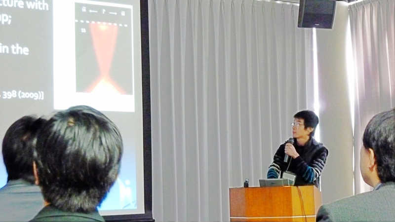
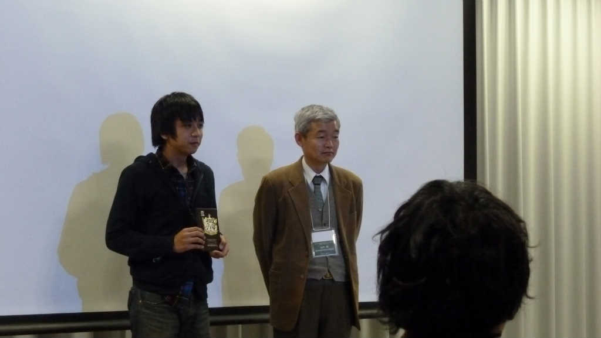

Home
News
Research
Publications
Messages
People
Links
English
HB-style
ホーム
>
ニュース
＞ 放射光表面科学部会
放射光表面科学部会
12 月 10,11 日、東京工業大学大岡山キャンパスで放射光表面科学部会、顕微ナノ材料科学研究会合同シンポジウムが開催された。光物性研究室からは D3 の
叶茂
、M2 の
黒田健太
が参加し、トポロジカル絶縁体に関する研究発表を行いました。このジンポジウムで黒田が最優秀ポスター賞を受賞した。
発表タイトル
招待講演 叶茂
「Surface states of topological insulators studied by scanning tunneling microscopy/spectroscopy and angle-resolved photoemission spectroscopy」
ポスター発表 黒田健太
最優秀ポスター賞
「三元トポロジカル絶縁体 TlBiSe
2
における理想的なディラック表面状態」
 
広島大学
理学部・理学研究科
物理科学専攻
Copyright(C) 広島大学 大学院理学研究科 物理科学専攻 光物性研究室